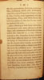
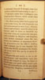
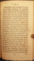
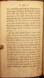
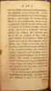
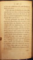
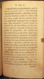

contents | previous | next VERY bitter were the reproaches which Rosalie was compelled to hear during their way home. She bore them with patience and silence, conscious perhaps that they were not wholly unmerited; she was, indeed, willing enough to acknowledge that she should not so rudely have repulsed Hughson in positive disobedience of her father's commands; but why her mother should make her conversation with Charles Vyvian so great a crime, she could not imagine, since in fact she had shown a much greater disposition to converse with his cousin than with him, and was perfectly conscious that she gave him no other preference than what arose from the long intimacy, that being so much together in childhood, had created between them.....
 View image of 96On this conversation, however, it was that Mrs. Lessington dwelt with acrimonious repetition—protesting to her daughter, that if Mrs. Vyvian were acquainted with the impropriety, folly, and disobedience she had been guilty of, that her favour would be forfeited for ever. After listening to such sharp reproaches, intermingled with many assurances of the anger and resentment of both her parents, unless she behaved in a very different manner to Mr. Hughson, Rosalie obtained with some difficulty leave to retire, when, the image of Montalbert was the only one that she found rested forcibly on her mind: his conversation made a deeper impression the more she reflected on it. Montalbert was not only the most elegant and agreeable man she had ever conversed with, but he appeared to her to be the most unlikely man in the world to amuse himself with the cruel, yet too frequent folly of making professions that mean nothing. Montalbert therefore loved her. An idea so soothing acquired new power to charm
) View image of 97 View image of 97 her in proportion as she reflected on all he had said, and the manner in which he said it. How fortunate would be her destiny, should she become the wife of such a man, and how was it possible that her mother, who must see the marked preference he gave her, could hesitate a moment between him and such a man as Hughson. It was true Mr. Montalbert was a Catholic, but of what consequence was that?—Was not her mother's earliest and best friend of the same persuasion?—Such were some of the contemplations which engrossed the thoughts of Rosalie, and, fatigued as she was, kept her from repose till she heard the whole party return. Loud mirth, which echoed throughout the house, declared the joyous hearts of the company. Rosalie particularly distinguished the boisterous laugh and horse-play of Blagham, and the ideot-like chuckle of Hughson. Rosalie delighted to have escaped this conclusion to the evening, and fearing that her sister, who shared her bed for that night, might either be elated with
) View image of 98 View image of 98the amusements of the latter part of the evening, or not yet have recovered of the ill-humour she had felt at the beginning of it as to enter into conversation with her, either to testify her pleasure or vent her ill-humour, Rosalie affected to be asleep. The next morning was fixed for their return home. At breakfast every body affected to resent to Rosalie what had passed the evening before; and while Mr. Lessington regarded her with evident marks of displeasure, and would not speak to her, while her mother, still more angry, talked at her, and encouraged Blagham, in his strictures on the company who were to assembly, to ridicule the two travelled men, who were, he said, the greatest coxcombs he ever recollected to have seen——to which Hughson very warmly assented, casting at the same time a look of resentment at Rosalie, as if to say, "Yet you, Miss, preferred these men to me?" "For my part, (said Blagham), by the Lord, if I had a sister who preferred such
) View image of 99 View image of 99Frenchified chaps to honest Heart of Oak Englishmen, why I send her off to be a Signora or Mademoiselle among them—I should think such a bad taste a disgrace to my family. To be sure, in regard to these two fine gentlemen, they being Papists is reason enough for their being educated among your Seniors and Monseers; but what the use is of sending our young nobility and gentry to learn a parcel of useless coxcombry amongst them, I never could discover; and I own, Sir, (addressing himself to Mr. Lessington), that when I consider this matter, I cannot but think that the Legislature of our three kingdoms ought to interfere." Before Mr. Lessington, who never spoke without due consideration and emphasis, could return an answer, Miss Maria said, "Oh! there they go!" "Who go?" inquired her mother. "My sister Rose's great and fine friends, (answered Maria), Mr. Vyvian and Mr.——, I forget his name, that very finest of all fine men."
) View image of 100 View image of 100Rosalie, who had seen them as well as her sister, could not help but blushing. Montalbert had looked earnestly in as he passed, and checked his horse a moment when he perceived he had caught her eye. "I hope, (said Mrs. Lessington austerely), that Mr. Vyvian is returning immediately to his mother, who is extremely ill, who knows nothing of his being here, and who would be extremely unhappy were she to be informed of it. It was but the day before yesterday he was ill in bed, (added she, casting a significant glance at her youngest daughter), and last night he was at a ball." "He did not dance, however, Madam, (said Rosalie), and I understood came hither only to consult a physician." "Who informed you of all this, Ma'am, (answered her mother), and why do you take upon you to answer for him?" Rosalie, whose conscience was perfectly clear in regard to Vyvian, answered calmly, "He told me himself, Madam, and
 View image of 101I answered, because I thought your conversation addressed particularly to me." "Humph—(said Mrs. Lessington contemptuously)—silence, child, would often become you much better." The other young ladies had a great deal to do in the town, for Miss Catharine was now to be married in three days. Mantuamakers and milliners were therefore to be hurried, and, as soon as breakfast was over, they went out together for that purpose, attended by Blagham and Hughson, while Rosalie remained where she was, having no ambition to accompany them; her preparations for her sister's wedding were confined, (as it was intended that Maria only should accompany the bride), and about these she was by no means solicitous. Disagreeable and uneasy to her as the remonstrances and reproaches were that she was still obliged to hear, she flattered herself that one good effect would arise from the circumstances of the preceding evening—that Hughson, convinced of its
) View image of 102 View image of 102inefficacy, would carry his suit no farther, and that his pride would prevent her being teazed with addresses, which her sister seemed disposed to receive favourably. But in this hope she was disappointed. The admiration Rosalie had so universally excited, while her sister had been hardly noticed, the whispers of approbation that he had heard from the most fashionable set in the room, for whose opinion the whole country around had the most implicit deference, as well as the impression she seemed to have made on Vyvian and Montalbert, were altogether circumstances so far from deterring Hughson from pursuing her, that they served only to inflame his ambition; and, though he affected to direct his attention towards Miss Maria for a while, in hopes of piqueing Rosalie, he soon renewed those expressions of affection and protestations of unwearied perseverance, from which Rosalie foresaw so much persecution and trouble. As Hughson was to perform the marriage ceremony between his friend Blagham
) View image of 103 View image of 103 and Miss Kitty Lessington, he went back with the family, and by his troublesome assiduities, and ridiculous attempts at gaiety and wit, deprived her of the satisfaction she would have derived from having left a place so very disagreeable to her as the provincial town where they had passed the last three days.......At home she as least hoped to enjoy the solitude of her own room, but she dared not ask herself, whether she ought to venture the meeting Montalbert had so earnestly solicited....She felt all its impropriety; then endeavoured to reconcile herself to a step from which she thought no evil consequence could possibly arise. "My mother, (said she, arguing this point with herself), my mother will never forgive me, should she know it—but how will she know it? — and what real harm is there in it?—It would certainly have a bad appearance, were a young woman known to have private meetings with any one—but what meetings can I have?—Is not Mr. Montalbert immediately going back to Italy, and is there
) View image of 104 View image of 104 any probability of my ever seeing him again?—Ah! no."—The argument concluded with a deep sigh, but it had not helped to determine her from an almost intuitive sense of propriety, for she had received but little instruction on such matters; she was conscious that she ought not to go out with a view of meeting Montalbert: yet to think that she had seen him for the last time, to let him go with impressions of her having a predilection in favour of such a man as Hughson, of her being happy among such society as she was condemned to, it was impossible to determine on it. Sleep the ensuing night was driven from the pillow of Rosalie by these debates; but it was at this season, long before day appeared with its first dawn, however, she left her bed, for it would very soon be necessary to determine whether she would venture to commit such an impropriety as meeting Montalbert, or suffer him to depart under the impressions he would carry with him, if she saw him no more.
 View image of 105 His dejection when he spoke of immediately leaving England, his respectful manners, the warm and lively affection he seemed to have for her, the advantageous light in which his honourable addresses appeared to her, all contributed to dispose her to meet him; against it there was only that internal sense of prudence, (which, like the voice of conscience, could not be entirely stifled), and the fear of offending her mother. Yet why should her mother be offended?—Considered in every way, whether as to fortune, rank of life, family, or prospects, there could, she thought, be no comparison between Montalbert and Hughson; and if to have her married well was the wish of her parents, why should they be angry at her not declining an acquaintance which seemed likely to end in an establishment above their hopes. There was some truth, but more sophistry, in the arguments she used with herself to conquer her remaining apprehensions; when, having determined to venture, since it could be but for once, she left the house,
 View image of 106and, trembling and looking behind her at every step, hastened through the heavy dews and gray fogs of a late October morning to the copse where she had first unexpectedly met Vyvian and Montalbert, and where he had told her he should be very early on this morning, the last of his stay in the country, in hopes of her giving him an opportunity of taking a long leave of her. As she had usually been a very early riser, and frequently walked to some neighbouring village, or farm-house, before the rest of the family were risen, the servants and labourers, who saw her pass, took no notice of it, and she had crossed the orchard, and traversed the first copse with the swiftness of an affrighted fawn, before she gave herself time to breathe. The gloomy quiet of every object around her, the heavy gray mists that hung on the half-stripped trees, their sallow leaves slowly falling in her path, had something particularly aweful and oppressive: she could hardly draw her breath, and her heart
) View image of 107 View image of 107beat so violently that she leaned against the style that in one place divided the wood. "Whither am I going? (said she); to meet a man, who till a week since was a stranger to me! How am I sure that he will not despise me for this early compliance; perhaps I shall forfeit his good opinion—perhaps—surely it were better to retreat." There was, however, no longer time to hesitate, for at the end of the path before her Montalbert appeared. He sprang forward eagerly the moment he saw her—"This is very good, dearest Miss Lessington, (cried he); how infinitely I am obliged to you!" "And now, (said Rosalie, collecting all her resolution), let me not risk my mother's displeasure by staying long; but receive, Sir—receive my sincere good wishes for your health and happiness, and suffer me to bid you adieu!" "Good Heavens! (replied he), and will you already leave me?—No, Rosalie, our time is precious, and I will not throw it away in a profusion of words: I love you,
 View image of 108and am sensible that on you alone depends the happiness of my future life. I will not, however, deceive you: I am a younger brother; and though the fortune of my family is very considerable, much of my expectations depend on my mother, who is a native of another country, who has hardly ever been in England, and who dislikes the customs, the manners, and, above all, the religion of this; with a great number of prejudices, which contribute but little to the happiness of her family, nor, I fear, to her own; she has, however, always been to me an affectionate, if not a tender mother, and it would be equally ungrateful and impolitic, were I to act in absolute defiance of her known wishes. Yet, surely, a medium may be found—without incurring her displeasure, I may escape the misery of resigning the only woman I ever saw, with whom I wish to pass my whole life." "I do not see how, (answered Rosalie, trembling and faltering). No, Sir; however flattered I may be by your good
) View image of 109 View image of 109opinion, I entreat you to think of me no more, otherwise than as a friend. The obstacles between us are insurmountable, and————" "Not if you do not make them so, Rosalie, (interrupted he). Hear me with patience: Though you may think my mother's known aversion to my marrying an English woman and a Protestant, together with the state of my fortune, sufficient reasons for refusing immediately to unite your destiny with mine—yet surely you need not therefore refuse to remove the fear, the tormenting fear, of losing you, by promising that you will not give yourself to another, at least till I have attempted to conquer the obstacles that oppose my happiness. O Rosalie! if you had any idea of the agonies I feel, when I think that while I return to Italy in the hope of finding a remedy against the perverseness of my destiny, the object of my affections may be the wife of another—even of this Hughson, on whom it seems
 View image of 110to be the resolution of your family to throw you away." "If it be any satisfaction to you, Sir, (said Rosalie in a low voice), to know that Mr. Hughson can never be more to me than a common acquaintance, I most positively assure you of it." "I am persuaded you think so now, (answered Montalbert with vivacity); but who shall assure me, Rosalie, that you can always resist the importunities, the commands of your father; family convenience, and what is called the voice of prudence, and all those motives that may be urged to enforce your obedience? Besides, if you should have resolution enough to dismiss this man, how many others are there who may have the same pretensions? No, nothing can give me a moment's peace, unless you promise me, loveliest of creatures, that you will await my return from Italy—that you will then be mine, if the obstacles now between us can be removed."
 View image of 111 "On so short an acquaintance, can I, ought I, to promise this?" replied Rosalie with increased emotion. She then, though in broken sentences, and in a faint and low voice, urged all the reasons there were against her forming such an engagement; but Montalbert found means to convince her of their fallacy one by one, till at length he extorted from her the promise he demanded. He insisted on being allowed to cut off a lock of her hair, and on her taking a miniature of himself which he drew from his pocket, and which he owned had been drawn in London for his mother. He then told her that he should write to her, and that she must find some means of their securely corresponding. This Rosalie declared was quite impossible; but while he was pressing her to reflect farther, a loud voice was heard in the part of the wood adjoining the orchard calling on Rosalie. Terror now seized her. "It is my father, (said she). If he finds you with me, what shall I not
) View image of 112 View image of 112suffer!—leave me—leave, me for Heaven's sake!" "You terrify yourself needlessly; it may only be a servant sent to seek you." "And why to seek me, (replied she), if there was no suspicion of my being improperly absent? It is not usual for them to inquire or call after me." Montalbert now saw her so affected with apprehension, that he would not longer detain her; but kissing her hand, and pressing it a moment to his bosom, he told her he would find the means of writing to her, and disappeared, while Rosalie, endeavouring to recollect and compose herself, took the path that led towards home.
|
){kind=link}
){kind=link}
){kind=link}
){kind=link}
){kind=link}
){kind=link}
){kind=link}